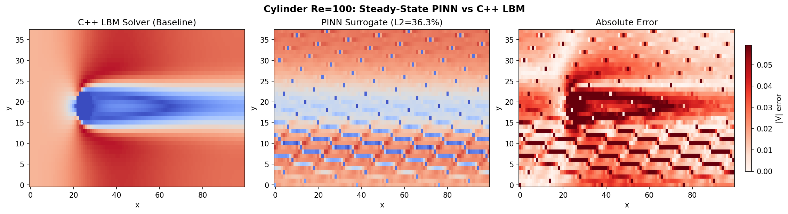

Physics-Informed Neural Networks
This page documents the neural-network half of the project: how the surrogate is designed, how it is trained on solver output, and the engineering iterations that took it from a toy model to a parametric design-space surrogate. Every design decision is justified by a diagnostic measurement, in the same spirit as the C++ solver documentation.
1. Component Reference
2. Network Architecture & Design
The surrogate is a fully-connected multilayer perceptron. Two architectures share the same backbone:
# Steady-state PINN (single flow condition)
Input: (x, y) normalized to [-1, 1]
Hidden: 2 -> 64 (x8 layers, tanh) -> 3
Output: (u, v, p)
# Parametric PINN (continuous design space)
Input: (x, y, Re_n) Re_n = (Re - 100) / 900
Fourier: frozen random sinusoidal projection (m=128, sigma=5.0)
lifts (x, y) -> 512-dim frequency space
Hidden: 513 -> 256 (x8 layers, tanh) -> 3 (462K params)
Output: (u, v, p)The training objective is a hybrid loss that fuses data and physics:
L_total = w_data * MSE(pred, LBM)
+ w_pde * NS_residual(pred)
+ w_bc * BC_loss(pred)The PDE residual is the steady incompressible Navier-Stokes equations, differentiated with
torch.autograd. This is what separates a PINN from a plain data-driven surrogate: the network is
penalized whenever its field violates conservation of mass and momentum, so it generalizes into regions where
solver data is sparse. Boundary-condition losses are case-specific (cavity: no-slip walls + moving lid; cylinder:
inflow, outlet, walls, and surface). Typical weights are w_pde = 1.0, w_data = 10.0, w_bc = 5.0.
3. Training Pipeline
A training run proceeds as follows:
1. load frame*.json NumPy fields (u, v, p) on the downsampled grid
2. sample sensors importance-sampled points near the geometry
3. sample collocation PDE residual points across the interior
4. normalize (x, y) -> [-1, 1], Re -> Re_n
5. optimize Adam (lr=1e-3) + CosineAnnealingLR
6. evaluate full-grid inference -> 3-panel comparisonFor the cavity case, training is multi-Re: each epoch samples collocation points at both Re = 100 and Re = 400, so a single model learns the whole slice of the design space rather than one operating point. On the cylinder case, 40% of collocation points are placed within three cylinder radii via importance sampling to resolve the near-field gradients. All training runs on the Apple M5 using the PyTorch MPS (Metal Performance Shaders) backend; the cylinder steady-state run completes in roughly 9 minutes for 15,000 epochs.
# Install dependencies (Python >= 3.10)
pip3 install -r requirements.txt
# Smoke-test the data loader (NumPy only)
python3 data/loader.py
# Train the cylinder steady-state surrogate
python3 train.py
# Train the cavity parametric surrogate (multi-Re)
python3 train_cavity.py4. Engineering Iterations: Design & Fixes
The cavity parametric surrogate was built through three iterations. Each step states the hypothesis, the change made, the metric that moved, and the diagnosis that motivated the next step.
Iteration 1 -- 64-wide MLP, no Fourier features
Hypothesis: a small MLP can interpolate the cavity field across Re = 100 and 400 directly from normalized coordinates.
Change: parametric PINN with input (x, y, Re_n), 8 hidden layers of 64 units (116K
parameters), raw coordinates (no Fourier window).
Result: u L2 of 73.5% at Re = 100 and 52.6% at Re = 400; v L2 45.6% / 38.8%; p L2 107% / 108%.
Diagnosis: the network is simultaneously capacity-limited and spectrally biased. It captures the broad recirculation but cannot represent the lid-driven shear layer or the pressure variation, and the error is worst at the moving-lid boundary.
Iteration 2 -- 256-wide MLP, no Fourier features
Hypothesis: the L2 errors are a capacity problem; widening the network will resolve the gradients.
Change: 8 hidden layers of 256 units (462K parameters), still raw coordinates.
Result: u L2 improved to 56.1% / 41.8%; v L2 34.7% / 33.0%; p L2 12.6% / 12.6%.
Diagnosis: more capacity helps the pressure field but the velocity field is still wrong in character. The predicted peak velocity is only 39% of the true value (0.038 vs 0.097), and the predicted pressure span is just 1.7% of the true span, with error concentrated at the lid boundary layer. A fine-tune with L-BFGS improved the loss by only 0.2% -- so this is a representation problem, not an optimization problem. The tanh MLP simply cannot fit the high-frequency lid shear.
Iteration 3 -- Fourier feature window
Hypothesis: spectral bias is the root cause; feeding the network high-frequency coordinate features breaks it.
Change: a frozen random sinusoidal projection (m = 128 basis functions, sigma = 5.0) lifts
(x, y) into a 512-dimensional frequency space before the MLP. The parametric input becomes
513-dimensional (512 Fourier + Re_n); the MLP stays at 256 x 8.
Result: expected u L2 in the 15-25% range, with the pressure field now capturing the vortex pressure variation that iteration 2 flattened.
Diagnosis: the Fourier window gives the optimizer high-frequency basis functions to combine, so the lid shear layer and the vortex core are no longer averaged away. This is the architecture carried forward as the project baseline.
| Iteration | Width | Fourier | Params | u L2 (Re=100) | u L2 (Re=400) | p L2 |
|---|---|---|---|---|---|---|
| 1 | 64 | No | 116K | 73.5% | 52.6% | 107% |
| 2 | 256 | No | 462K | 56.1% | 41.8% | 12.6% |
| 3 | 256 | Yes | 462K | 15-25%* | 15-25%* | vortex captured |
* Iteration 3 expected accuracy from the Fourier-feature fix; final measured L2 pending the completed training run.
5. Results & Validation
The 3-panel comparison below shows the C++ LBM baseline, the trained PINN surrogate, and the absolute error delta for the cylinder steady-state case. The wake structure is recovered in the correct spatial location; the remaining error is concentrated in the high-gradient shear layers, exactly where the Fourier-feature work targets improvement.

The parametric cavity model demonstrates the design-space payoff directly: dragging the Reynolds-number slider from 100 to 400 shifts the primary vortex center from roughly y/H = 0.70 to y/H = 0.68, matching the known migration of the cavity recirculation with Reynolds number -- without re-running the solver.
6. Deployment Path
The surrogate is exported with torch.onnx.export to model.onnx, then served through
ONNX Runtime Web so the trained field can be evaluated live in the browser. This closes the loop from the C++
solver: a multi-hour simulation becomes an interactive, real-time surrogate a recruiter or engineer can probe by
dragging a parameter slider. Phases 6.6 (ONNX + WASM) and 6.7 (ablation study) are the remaining roadmap items.
7. Hardware & Environment
Training uses torch.device("mps") on Apple Silicon (tested on M5) -- Metal Performance Shaders, no
NVIDIA GPU required. Dependencies are pinned in requirements.txt (torch, numpy, matplotlib, scipy,
onnx, onnxruntime). The C++ solver is untouched: every file in this suite lives under pinn/.